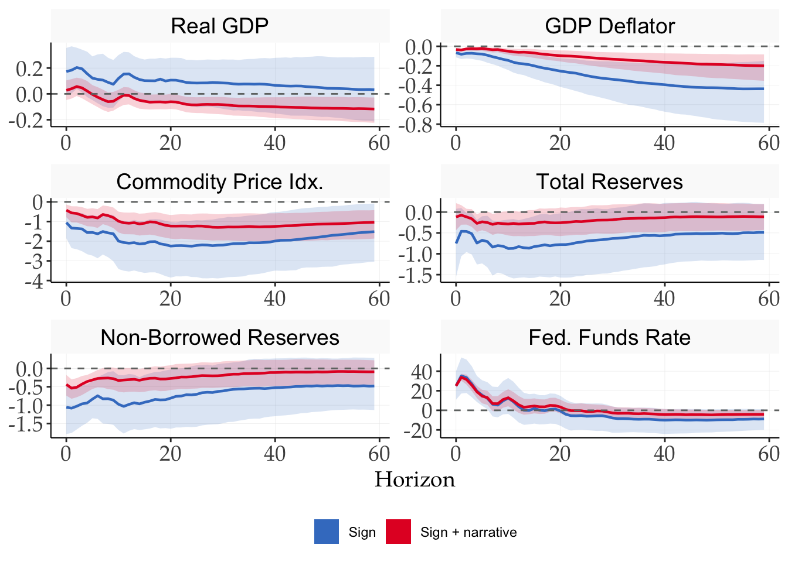
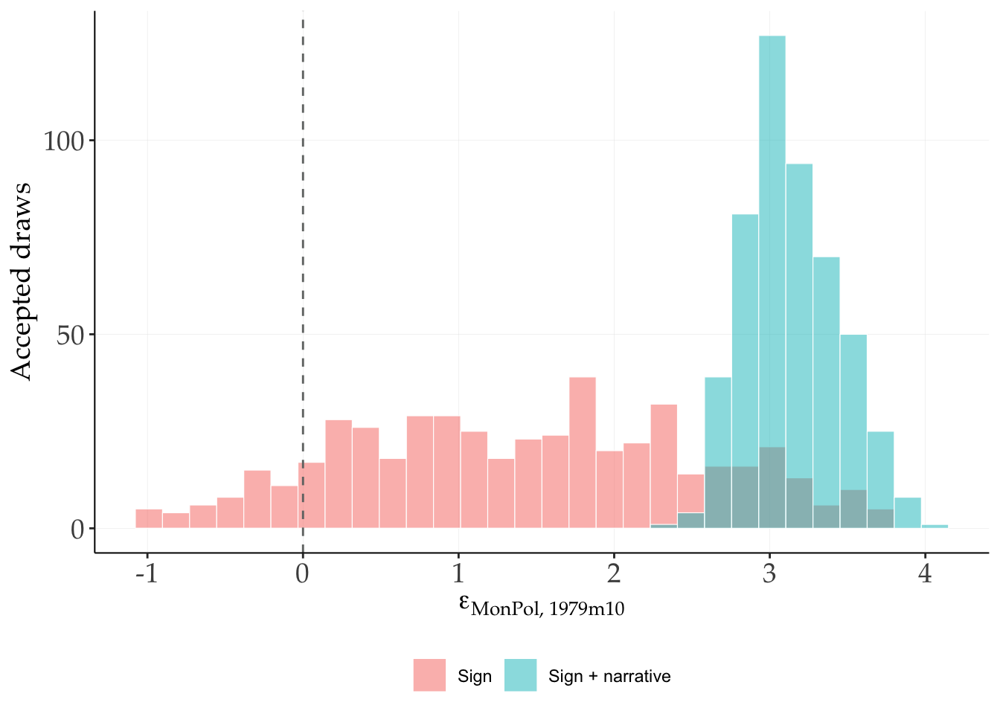
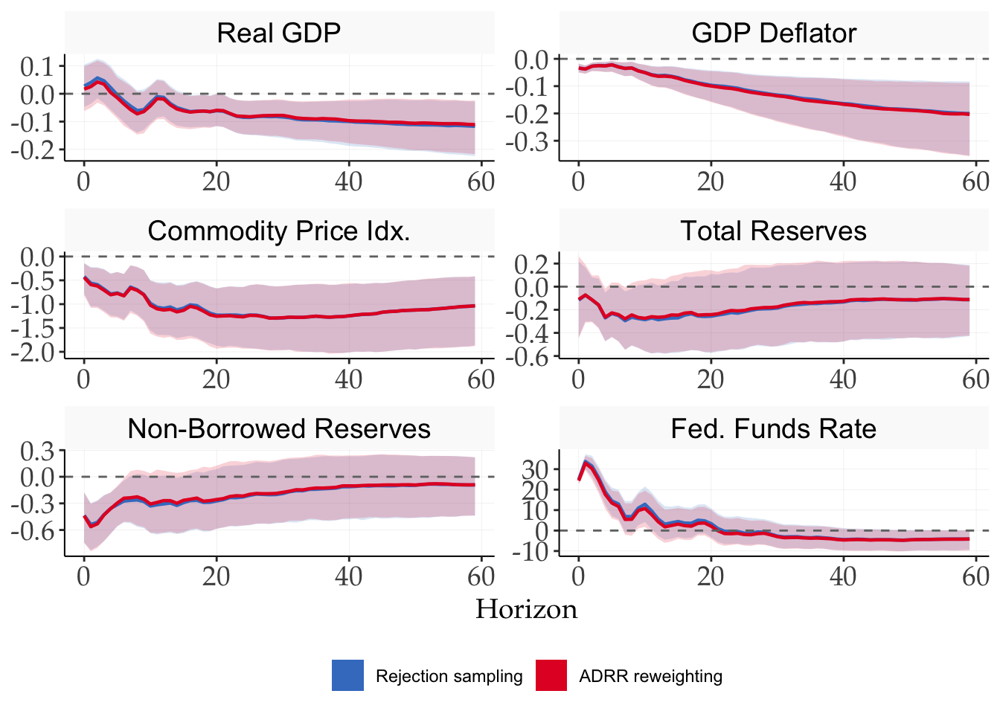

library(tidyverse)
library(tidyMacro)
theme_set(fThemeTidyMacro())
as_var_matrix <- function(data) {
data |> select(-Date) |> as.matrix()
}Identification via narrative restrictions
1 Setup
2 Narrative restrictions
The baseline follows inst/Bianchi/Replic/ADRR2018/GO_ADRR2018.m and the narrative screens in the supplied VAR Toolbox’s SR.m. The optional importance weights below extend that toolbox example.
A large set of rotations can satisfy sign restrictions, producing wide credible sets. Antolín-Díaz and Rubio-Ramírez (2018) sharpen identification by adding narrative restrictions, constraints tied to specific, well-documented historical episodes. The insight is that the historical record (policy announcements, oil supply disruptions, fiscal interventions) carries information about the sign or relative magnitude of a structural shock at a particular date, and that restricting the model to be consistent with it shrinks the set of admissible rotations.
Let \(\varepsilon_{jt} = B_j^{-1}u_t\) be the structural shocks under candidate \(B_j\). Two restriction types are defined.
Type 1, sign of the shock. At date \(t^*\) the \(m\)-th shock must have a specified sign, \[s \cdot \varepsilon_{j,m,t^*} > 0, \qquad s \in \{+1,-1\}.\]
Type 2, dominance. At date \(t^*\) the contribution of shock \(m\) to the unexpected movement in variable \(i\) must exceed the combined contribution of all other shocks, \[\bigl|b_{j,im}\,\varepsilon_{j,m,t^*}\bigr| > \sum_{k \neq m}\bigl|b_{j,ik}\,\varepsilon_{j,k,t^*}\bigr|.\]
Both are applied as additional acceptance criteria after a rotation satisfying the sign constraints has been found. A draw that passes the signs but fails a narrative constraint is discarded, so the acceptance rate can only fall. How far it falls is itself informative: a large drop means the historical episodes genuinely narrow the identified set; little or no drop means they add nothing beyond the sign constraints.
The application keeps Uhlig’s sign restrictions, extends the sample to 1965m1–2007m11, and estimates without a constant, as in the supplied toolbox example. The stored data are passed directly to the estimator; this code does not apply an additional demeaning step. The extra information comes from October 1979, the month of the Volcker announcement. Two facts are beyond serious dispute: the monetary policy shock was strongly positive, and monetary policy was the dominant driver of the unexpected move in the funds rate that month.
data(ADRR2018)
adrr <- ADRR2018
# The narrative design retains Uhlig's six-variable sign pattern.
ff_rate <- 6
mp_shock <- 1
sign_uhlig <- matrix(
0, nrow = 6, ncol = 6,
dimnames = list(names(adrr)[-1], NULL)
)
sign_uhlig[, mp_shock] <- c(0, -1, -1, 0, -1, 1)
adrr |> head(3)
#> # A tibble: 3 × 7
#> Date `Real GDP` `GDP Deflator` `Commodity Price Idx.` `Total Reserves`
#> <date> <dbl> <dbl> <dbl> <dbl>
#> 1 1965-01-01 8.26 2.92 20.2 2.48
#> 2 1965-02-01 8.26 2.92 20.2 2.48
#> 3 1965-03-01 8.27 2.92 20.2 2.48
#> # ℹ 2 more variables: `Non-Borrowed Reserves` <dbl>, `Fed. Funds Rate` <dbl>volcker <- ym("1979-10")
spec_adrr <- list(p = 12, c = 0, sign = sign_uhlig, nsteps = 60, ndraws = 500, sr_hor = 6, conf = 68, inference = 1, store_draws = FALSE, max_post_draws = 5000, dates = adrr$Date, seed = 42)
sr_adrr <- do.call(fSignRestr, c(list(as_var_matrix(adrr)), spec_adrr))
nsr_adrr <- do.call(fSignRestr, c(list(as_var_matrix(adrr)), spec_adrr, list(
narrative = list(
# Type 1: the MP shock was positive in October 1979. `sign = 1` here is a
# direction, not an address.
sign = list(shock = mp_shock, period = volcker, sign = 1),
# Type 2: the MP shock dominated the funds-rate residual that month.
dom = list(shock = mp_shock, period = volcker, var = ff_rate)
))))
tibble(
model = c("Sign only", "Sign + narrative"),
accept_rate = c(sr_adrr$accept_rate, nsr_adrr$accept_rate),
rotations = c(sr_adrr$ndraws_tried, nsr_adrr$ndraws_tried)
)
#> # A tibble: 2 × 3
#> model accept_rate rotations
#> <chr> <dbl> <dbl>
#> 1 Sign only 0.290 1723
#> 2 Sign + narrative 0.0289 17322The narrative screen costs roughly an order of magnitude in acceptance rate. One well-documented month does a lot of work, and the cost of that work is exactly why the draw loop is worth writing in parallel C++.
Responses are normalised to a 25 basis point impact on the funds rate, as in the paper’s replication code: one scalar per model, computed from the median impact response and applied to every draw before percentiles are taken.
norm_25bp <- function(sr, ff_var = ff_rate, shock = mp_shock) {
# Impact responses are already stored in Ball: no full IRF draws needed.
# The common factor expresses log responses in percent and the rate in bp.
100 * 0.25 / median(sr$Ball[ff_var, shock, ])
}
scale_sr <- norm_25bp(sr_adrr)
scale_nsr <- norm_25bp(nsr_adrr)
tibble(model = c("Sign only", "Sign + narrative"),
scale = c(scale_sr, scale_nsr))
#> # A tibble: 2 × 2
#> model scale
#> <chr> <dbl>
#> 1 Sign only 116.
#> 2 Sign + narrative 64.4fPlotIRFSign(
sr_adrr, shock = mp_shock, compare = nsr_adrr,
labels = c("Sign", "Sign + narrative"),
scale = scale_sr,
scale_compare = scale_nsr,
facet_ncol = 2,
facet_scales = "free"
)
Adding the October 1979 restrictions narrows the identified set and shifts the central estimates. Both effects come from the same mechanism: candidates that satisfy the signs but are inconsistent with the Volcker episode are discarded, leaving a smaller and differently located set. The substantive payoff is in the top-left panel. The sign-only output response is positive or indeterminate; the narrative restrictions push the median below zero at medium and long horizons, so a contractionary shock now lowers output, resolving the ambiguity left by Uhlig’s agnostic identification.
2.1 Where the restrictions bite
The mechanism is clearest in the distribution of the identified shock at the targeted date itself.
# eps_t = B^-1 u_t, evaluated at the Volcker month for every accepted draw.
# The first p rows are absorbed as initial conditions, so the residual-sample
# index is the data row minus the lag order.
volcker_row <- which(adrr$Date == volcker) - spec_adrr$p
shock_at <- function(sr, row, shock = mp_shock) {
u <- sr$var$residuals[row, ]
apply(sr$Ball, 3, \(B) solve(B, u)[shock])
}
shock_dist <- bind_rows(
tibble(model = "Sign", eps = shock_at(sr_adrr, volcker_row)),
tibble(model = "Sign + narrative", eps = shock_at(nsr_adrr, volcker_row))
) |>
mutate(model = factor(model, levels = c("Sign", "Sign + narrative")))
shock_dist |>
group_by(model) |>
summarise(min = min(eps), median = median(eps), max = max(eps),
share_positive = mean(eps > 0))
#> # A tibble: 2 × 5
#> model min median max share_positive
#> <fct> <dbl> <dbl> <dbl> <dbl>
#> 1 Sign -0.990 1.45 3.78 0.896
#> 2 Sign + narrative 2.39 3.10 4.06 1ggplot(shock_dist, aes(eps, fill = model)) +
geom_histogram(bins = 30, position = "identity", alpha = 0.5,
colour = "white", linewidth = 0.2) +
geom_vline(xintercept = 0, linetype = "dashed", colour = "#707372") +
labs(x = expression(epsilon["MonPol, 1979m10"]), y = "Accepted draws")
Both restrictions bite, but differently. Under sign restrictions alone the shock is already mostly positive (the sign constraints on their own go some way toward placing the Volcker month in contractionary territory), yet a non-negligible left tail survives, of draws that satisfy every sign restriction while implying an expansionary monetary impulse in October 1979. Type 1 removes exactly that tail. Type 2 then does the heavier lifting: it discards draws that attribute the funds-rate move mainly to other shocks, and the surviving mass concentrates on large positive values well away from zero. The tighter bands in the previous figure are the downstream consequence of this reshaping.
2.2 Rejection sampling versus reweighting
The VAR Toolbox uses equal-weight acceptance-rejection: every retained draw enters with the same weight. fSignRestr() follows that convention by default.
With narr_weight_mc > 0, the package estimates an ADRR-style importance weight for each accepted impact matrix \(B\). It simulates independent standard-normal structural shocks at the restricted dates and estimates the probability that those shocks satisfy the narrative constraints conditional on \(B\). The weight is the reciprocal of that probability. This simulation is over shocks, not over new rotations. It does not by itself validate every other sampling convention as an exact replication of Antolín-Díaz and Rubio-Ramírez (2018).
Dominance probabilities depend on \(B\), so weights can vary across rotations even with inference = 0. The Monte Carlo estimate floors zero hit counts at one hit to keep weights finite; very large weights therefore need attention and a larger simulation budget. Weighted bands are calculated in C++ without retaining the full IRF arrays.
nsr_weighted <- do.call(fSignRestr, c(list(as_var_matrix(adrr)), spec_adrr, list(
narrative = list(sign = list(shock = mp_shock, period = volcker, sign = 1),
dom = list(shock = mp_shock, period = volcker, var = ff_rate)),
narr_weight_mc = 2000)))
tibble(weight = nsr_weighted$weights) |>
summarise(min = min(weight), median = median(weight),
mean = mean(weight), max = max(weight))
#> # A tibble: 1 × 4
#> min median mean max
#> <dbl> <dbl> <dbl> <dbl>
#> 1 2.72 7.26 7.66 23.5fPlotIRFSign(
nsr_adrr,
shock = mp_shock,
compare = nsr_weighted,
labels = c("Rejection sampling", "ADRR reweighting"),
scale = scale_nsr,
scale_compare = norm_25bp(nsr_weighted),
facet_ncol = 2,
facet_scales = "free"
)
3 References
Antolín-Díaz, Juan, and Juan F. Rubio-Ramírez. 2018. “Narrative Sign Restrictions for SVARs.” American Economic Review 108 (10): 2802–29.